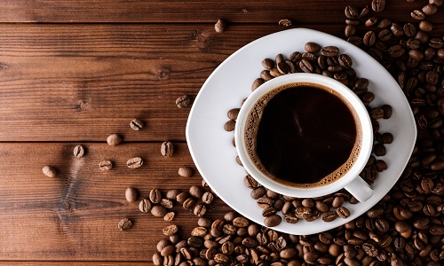
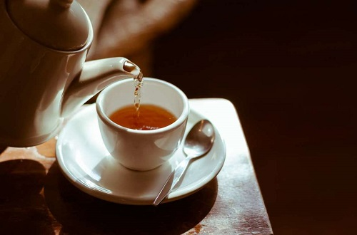
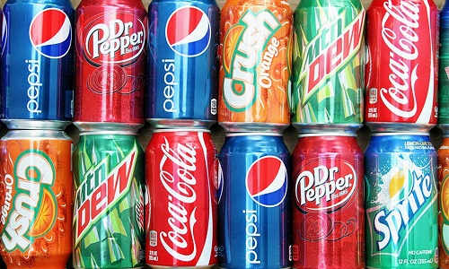
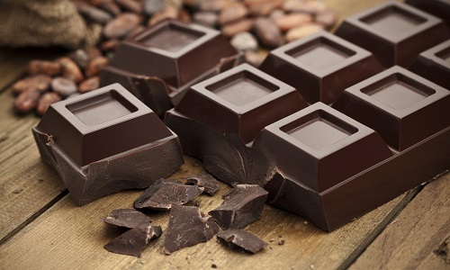

Caffeine is consumed as form of food, in many occasions as a drink. Its caffeine usually comes from plants that are used make them.
Coffee
Tea
Soda
Chocolate
For more effect, people tend to drink energy drinks that has been concentrated with caffeine and sugar (however, these drinks have lower caffeine but has more sugar).
Higher caffeine level does not necessarily mean that it will be stronger. For instance, energy drinks contain less caffeine than coffee, but it acts stronger than coffee.
To view amount of caffeine in drinks, click here.